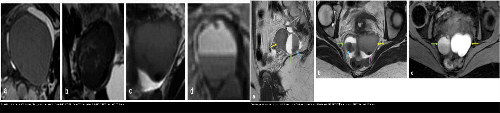
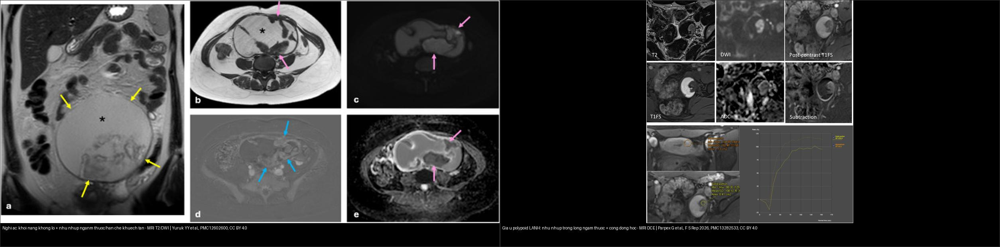
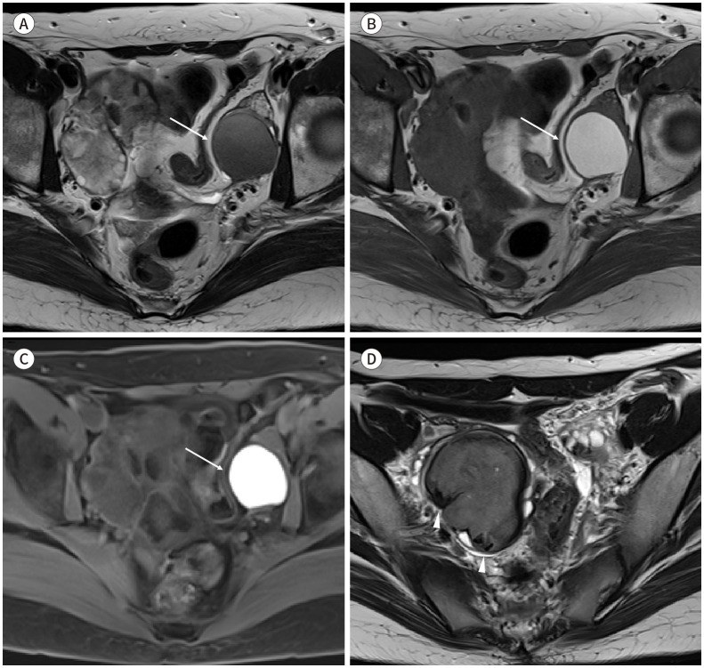
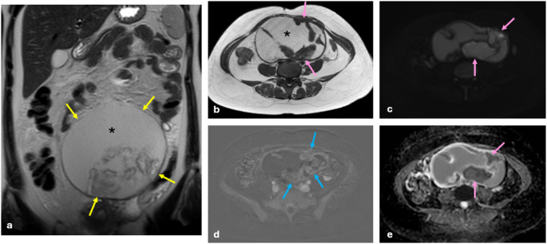
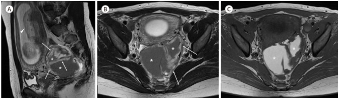

543 — Nang lạc nội mạc buồng trứng: T1 sáng + T2 shading & nguy cơ chuyển dạng / Ovarian endometrioma
Tags: pattern:nang-t1-sang pattern:lac-noi-mac vung:buong-trung score:O-RADS protocol:MRI-chau incidentaloma:nang-buong-trung
Mức chắc chắn (certainty): tổng hợp y văn (literature synthesis) — tổng hợp từ các bài tổng quan/nghiên cứu chẩn đoán mở (Abdom Radiol 2025 CC BY 4.0; J Korean Soc Radiol 2025 CC BY-NC 4.0; F S Rep 2026 CC BY 4.0; Eur J Radiol Open 2026 CC BY 4.0) + ca nguyên văn có hình.
1. Tổng quan bệnh học – cơ chế hình ảnh
- Lạc nội mạc tử cung (endometriosis) = mô tuyến–đệm nội mạc nằm ngoài buồng tử cung, chiếm ~6–10% phụ nữ tuổi sinh sản; 20–50% người vô sinh và ~90% người đau chậu mạn. Nang lạc nội mạc buồng trứng (endometrioma, "chocolate cyst") chiếm gần một nửa số ca, 50% hai bên.
- Ba tầng bệnh học (theo độ sâu): lạc nội mạc nông (superficial) < 5 mm dưới phúc mạc; **nang lạc nội mạc (endometrioma)** = nang vỏ dày chứa máu thoái hóa; **lạc nội mạc sâu (DIE, deep infiltrating endometriosis)** > 5 mm (xem 540).
- TẠI SAO nang T1 rất sáng + T2 tối (vật lý MRI + mô bệnh):
- Nang tái chảy máu theo chu kỳ → tích tụ sản phẩm thoái hóa máu cô đặc giàu sắt (hemosiderin) + protein. Hàm lượng sắt/protein cao rút ngắn cả T1 và T2 → T1W rất sáng (methemoglobin) + T2W tối dần (shading). Đây là lý do endometrioma T1 sáng mà KHÔNG mất tín hiệu khi fat-sat (khác mỡ của u quái).
- T2 shading (dấu lu mờ T2): giảm tín hiệu T2 lan tỏa trong lòng nang do nồng độ sắt/protein cao — độ nhạy 93% (Se) cho endometrioma. Bốn kiểu: đồng nhất (hay gặp nhất), dị thể (đặc hiệu nhất), phân lớp (layering), mức dịch–dịch (fluid-fluid, ít gặp nhất).
- T2 dark spot sign (điểm tối T2): ổ tối khu trú, bờ rõ trong lòng nang do cục máu co rút cô đặc, đặc hiệu 93% (Sp) — chốt phân biệt với nang xuất huyết cơ năng (HOC, hemorrhagic ovarian cyst). Điểm khác biệt: cục máu co rút (clot) có bờ nhọn/lõm, còn dark spot bờ đều, rõ.
- T1 "nhiều ổ" (multiplicity): nhiều nang T1 sáng cạnh nhau = dấu hiệu hay gặp của tái chảy máu (đa ổ lạc nội mạc).
- Ngưỡng định lượng bắt buộc:
- Nang điển hình: vỏ nhẵn, ≤ 3 vách/vách trong (locule), không mạch trong → O-RADS US v2022 = 2 (< 1% ác).
- Nang không điển hình hoặc > 10 cm → O-RADS US 3 (1 – < 10%).
- Đường kính trung bình nang chuyển dạng ác = 11,2 cm (lớn hơn rõ nang lành) — nghi ác khi > 10 cm + nốt thành ngấm.
- Nguy cơ ung thư buồng trứng ở người lạc nội mạc: RR 1,2–1,8 so với dân số chung.
- Nốt thành ngấm thuốc (enhancing mural nodule) = dấu nhạy nhất của EAOC, gặp ở 97% ca EAOC.
- Mất T2 shading gợi ý ác: shading có ở 81,3% ca lành nhưng chỉ 33,3% ca EAOC.
- Kém chính xác của MRI định tính cổ điển: Se/Sp chỉ khoảng 86,7%/81,9% — vì vậy cần radiomics/AI hỗ trợ.
2. Mẫu hình + chẩn đoán phân biệt theo cơ chế (Gamut)
- Ba câu hỏi gỡ rối một nang T1 sáng:
- T1 sáng có MẤT tín hiệu khi fat-sat không? Mất = mỡ (u quái/dermoid); không mất = máu/nhầy (endometrioma, HOC, u nhầy).
- Trên T2 có shading/dark spot không? Có = endometrioma; không + mức dịch–dịch + cục máu bờ nhọn = HOC; dịch "dịch kính mờ" + nhiều ngăn = u nhầy.
- Có nốt thành ngấm/dấu hiệu tăng kích thước không? Có = nghi EAOC / giả u polypoid / decidualization.
- Gamut theo bản chất chất lỏng (theo vật lý tín hiệu):
- Máu cũ cô đặc (sắt + protein): endometrioma (T1 sáng + T2 shading/dark spot).
- Máu mới/xuất huyết cơ năng: HOC (mức dịch–dịch, cục máu co rút, tự tan 6–12 tuần).
- Mỡ: u quái trưởng thành (T1 sáng mất khi fat-sat, mức mỡ–dịch, nốt Rokitansky, vôi hóa).
- Nhầy/dịch keo: u nhầy (nhiều ngăn, "cửa kính màu" stained glass, T1 thay đổi tùy ngăn, T2 rất sáng).
- Dịch trong (trong nang): nang đơn thuần/thanh dịch (T1 tối, T2 sáng, O-RADS 2).
- Tổn thương đặc ngấm: EAOC, BOT (u giáp biên) nhú mạch hóa — xem 537.
3. Bảng so sánh phân biệt (ma trận đối chiếu)
| Thực thể (entity) | Hình ảnh điển hình | Chốt vào (rule-in) | Chốt loại (rule-out) | Gợi ý xác nhận |
|---|---|---|---|---|
| Nang lạc nội mạc (endometrioma) | Nang vỏ mỏng, T1 rất sáng, T2 shading, có thể nhiều ổ | T1 sáng KHÔNG mất khi fat-sat + T2 shading/T2 dark spot | T1 sáng MẤT khi fat-sat → u quái; cục máu bờ nhọn + tự tan → HOC | MRI T1FS + T2; theo dõi; chỉ mổ khi đau/vô sinh/kích thước lớn |
| Nang xuất huyết cơ năng (HOC) | Mức dịch–dịch, cục máu co rút bờ nhọn/lõm, vỏ mỏng, không có dark spot thật | Tự tan sau 6–12 tuần trên phim lại | Không tan + T2 shading/dark spot → endometrioma | Siêu âm/MRI lặp 6–12 tuần (không mổ vội) |
| U quái trưởng thành (dermoid) | Khối mỡ + vôi hóa + nốt Rokitansky, mức mỡ–dịch | T1 sáng MẤT tín hiệu khi fat-sat (mỡ) | T1 vẫn sáng khi fat-sat → máu/nhầy | CT thấy mỡ −10 đến −100 HU + răng/vôi |
| U nhầy (mucinous) | Nhiều ngăn lớn, dịch "cửa kính màu", T2 rất sáng | Nhiều ngăn + tín hiệu khác nhau giữa các ngăn | Một ổ + shading đều → endometrioma | MRI; theo dõi kích thước, mổ nếu > 10 cm |
| EAOC (K tế bào sáng/endometrioid) | Nang lớn (trung bình 11,2 cm), nốt thành ngấm, DWI hạn chế, mất T2 shading | Nốt ngấm (97%) + tăng kích thước nhanh + lớn > 10 cm + ở hậu mãn kinh | Nốt không mạch, không ngấm → giả u polypoid | DCE + DWI; CA-125; sinh thiết |
| Giả u polypoid (polypoid endometriosis) | Nang lạc nội mạc + nhú/nốt trong lòng ngấm thuốc | Nhú tín hiệu giống nội mạc + ngấm, không xâm lấn vỏ | Nhú bờ gai + hạn chế khuếch tán + mất shading → EAOC | Sinh thiết; cảnh giác, dễ đọc nhầm ác |
| Decidualization (nang lạc nội mạc khi có thai) | Nốt thành dày, ngấm, tín hiệu giống bánh nhau | Có thai + nốt thành ngấm | Thoái triển khi theo dõi sau sinh → quyết định chờ | Theo dõi; nếu không thoái triển → sinh thiết |

Trái: nang lạc nội mạc — 4 kiểu T2 shading (đồng nhất/dị thể/phân lớp/mức dịch–dịch) trên MRI T2. Phải: trên nang xuất huyết cơ năng (mức dịch–dịch + cục máu bờ nhọn); dưới nang lạc nội mạc + T2 dark spot. Nguồn: Yuruk YY et al., Abdom Radiol (NY) 2025 (PMC12602600), CC BY 4.0. Ảnh ghép letterbox, giữ nguyên tỷ lệ.
Trái: nang lạc nội mạc nghi chuyển dạng ác — khối nang không lồ (~20 cm) + nhú trong lòng ngấm thuốc và hạn chế khuếch tán (bệnh phẩm: u giáp biên endometrioid). Phải: giả u polypoid lành — nhú trong lòng ngấm thuốc nhưng chẩn đoán mô bệnh lành. Nguồn: Yuruk YY et al., Abdom Radiol (NY) 2025 (PMC12602600) và Parpex G et al., F S Rep 2026 (PMC13282533), CC BY 4.0. Ảnh ghép letterbox.Dấu hiệu chốt then chốt
- T1 sáng KHÔNG mất khi fat-sat = máu/nhầy (loại mỡ). Đây là bước đầu tiên bắt buộc với mọi nang T1 sáng.
- T2 shading (Se 93%) + T2 dark spot (Sp 93%) là cặp dấu hiệu xác chốt endometrioma so với HOC.
- Nốt thành ngấm (97% ca EAOC) là dấu nhạy nhất của ác, nhưng giả u polypoid và decidualization cũng có nốt ngấm → phân biệt bằng bối cảnh (có thai? không thoái triển? bờ nhú/không mạch?) + sinh thiết.
4. Protocol chụp + hệ phân độ/điểm chuẩn hóa
- Siêu âm đầu tay (đầu dò qua âm đạo): nang đồng nhất echo mờ ("ground-glass"); điển hình = O-RADS 2; không điển hình/> 10 cm = O-RADS 3.
- MRI chậu chuẩn (1,5T hoặc 3T, coil mảng pha):
- T1W fat-sat (axial + sagittal) — ổ xuất huyết/nang T1 sáng.
- T2W (axial + sagittal + coronal) — shading, dark spot, nốt thành.
- DWI/ADC + DCE khi nghi ác/nhiễm trùng (nốt ngấm/hạn chế khuếch tán).
- Chuẩn bị: thuốc chống nhu động, bàng quang căng vừa, nhịn ăn 3–6 giờ; không phụ thuộc pha chu kỳ kinh.
- O-RADS MRI 2023 (ACR): nang T1 tăng tín hiệu + T2 shading/dark spot = điểm 2 (gần như chắc chắn lành); chỉ tăng điểm khi có nốt thành ngấm (score 4–5).
- Xử trí (bảo tồn buồng trứng là trọng tâm): theo dõi/điều trị nội (tránh mổ vội vì mổ lặp làm giảm dự trữ buồng trứng – AMH); bóc nang nội soi (cystectomy) khi đau/vô sinh/kích thước lớn; tái phát 19–30% (đau hành kinh tới 50%) — theo một đoàn hệ n = 1598, theo dõi trung vị 58 tháng: tái phát nang 21,8%, đau 22,1%.
flowchart TD
A[Nang buong trung T1 sang] --> B{Mat tin hieu khi fat-sat?}
B -->|Mat = MO| C[U quai/dermoid]
B -->|Khong mat = mau/nhay| D{Co T2 shading / T2 dark spot?}
D -->|Co| E[Nang lac noi mac: O-RADS MRI 2, theo doi]
D -->|Khong| F{Muc dich-dich + cuc mau bo nhon?}
F -->|Co| G[HOC: lap lai 6-12 tuan, khong mo voi]
F -->|Khong, nhieu ngan| H[U nhay]
E --> I{Not thanh ngam / to > 10 cm / tang nhanh?}
I -->|Co| J[Nghi EAOC: DCE+DWI, CA-125, sinh thiet]
I -->|Khong| K[Theo doi dinh ky; bao ton buong trung]
5. Biến thể bình thường và cạm bẫy
- Cục máu co rút trong HOC giả "T2 dark spot": khác biệt là cục máu bờ nhọn/lõm, còn dark spot thật bờ đều rõ — cộng thêm HOC tự tan trên phim lại.
- U quái giả endometrioma: lần đầu T1 sáng dễ nhầm; bắt buộc chuỗi fat-sat — mỡ mất tín hiệu, máu/nhầy giữ sáng.
- Giả u polypoid lành và decidualization khi có thai có nốt thành ngấm giả ác — đừng mổ ung thư vội: đối chiếu bối cảnh (thai kỳ) và theo dõi thoái triển.
- Mất T2 shading: gợi ý ác nhưng không đủ một mình — cần nốt ngấm/DWI/tăng kích thước.
- Cạm bẫy mặt cắt: nang lạc nội mạc dính/kéo có thể bị đọc nhầm là tổn thương đặc; luôn so T2 với T1FS và đánh giá cả hai buồng trứng + dính (kissing ovaries).
6. Tự lượng giá — Blind Quiz ngay trên trang tĩnh
Ca 1 — Nữ tuổi sinh sản, đau chậu mạn. Nang buồng trứng T1 rất sáng. Nhìn chuỗi ảnh, mô tả trước.

- Gợi ý lâm sàng (clinical context): đau chậu mạn, thống kinh; nang buồng trứng một bên.
- Câu hỏi: Tín hiệu trên T2 (A) và T1 (B) là gì? Tại sao T1 (C) vẫn sáng? D (mũi tên đầu) là dấu gì?
Bấm để hiện đáp án (findings + chẩn đoán)
- Dấu hiệu (findings): nang T2 tối (shading) (A) + T1 rất sáng (B) + vẫn sáng khi fat-sat (C) → máu cũ cô đặc; (D) ổ tối bờ rõ trong lòng nang = T2 dark spot sign.
- Chẩn đoán (diagnosis): nang lạc nội mạc buồng trứng điển hình — TẠI SAO: sắt/protein cao rút ngắn T1 và T2 → T1 sáng + T2 shading; O-RADS MRI 2, theo dõi bảo tồn (không mổ vội).
- Nguồn ảnh: Kim HJ et al., J Korean Soc Radiol 2025, PMC12531657, Fig. 6, CC BY-NC 4.0 (nguyên bản, không crop/ghép).
Ca 2 — Hai nang T1 sáng. Bên nào là nang lạc nội mạc, bên nào là nang xuất huyết cơ năng?
- Gợi ý: một ca đau chu kỳ lặp lại; một ca đau cấp một lần.
- Câu hỏi: Dấu hiệu phân biệt? Xử trí khác nhau thế nào?
Bấm để hiện đáp án (findings + chẩn đoán)
- Trái (ảnh trên): nang lạc nội mạc — 4 kiểu T2 shading = tín hiệu tối lan tỏa trong lòng.
- Phải (ảnh dưới): nang xuất huyết cơ năng — mức dịch–dịch + cục máu bờ nhọn (không phải dark spot thật); đối chiếu bên cạnh là nang lạc nội mạc có T2 dark spot.
- Xử trí: HOC → lặp siêu âm/MRI sau 6–12 tuần (thường tự tan, không mổ); endometrioma → theo dõi, chỉ mổ khi đau/vô sinh/kích thước lớn.
- Nguồn: Yuruk YY et al., Abdom Radiol (NY) 2025 (PMC12602600), CC BY 4.0.
Ca 3 — Nang lạc nội mạc theo dõi nhiều năm, nay to ra và có nhú trong lòng. Ác hay lành?

- Gợi ý: tiền sử nang lạc nội mạc buồng trứng trái nhiều năm; siêu âm mới thấy nhú trong lòng nang.
- Câu hỏi: Dấu hiệu nghi ác nào? Bệnh phẩm là gì?
Bấm để hiện đáp án (findings + chẩn đoán)
- Dấu hiệu (findings): khối nang không lồ (~20 cm) lan từ giữa chậu lên bụng trên + nhú trong thành nang ngấm thuốc (dấu trừ) và hạn chế khuếch tán (DWI sáng/ADC thấp); dịch T1 sáng, T2 tín hiệu trung gian.
- Chẩn đoán (diagnosis): nang lạc nội mạc nghi chuyển dạng ác — bệnh phẩm xác nhận u giáp biên endometrioid (endometrioid borderline tumor). Chốt: nốt thành ngấm (97% EAOC) + tăng kích thước + mất/giảm T2 shading.
- Nguồn ảnh: Yuruk YY et al., Abdom Radiol (NY) 2025 (PMC12602600), Fig. 3, CC BY 4.0.
Ca 4 — Nang lạc nội mạc + nhú trong lòng ngấm thuốc nhưng bệnh phẩm LÀNH. Vì sao dễ nhầm ác?

- Gợi ý: nang lạc nội mạc có thành phần đặc dạng nhú.
- Câu hỏi: Đặc điểm hình ảnh nào khiến dễ nhầm ung thư? Điểm khác EAOC?
Bấm để hiện đáp án (findings + chẩn đoán)
- Dấu hiệu (findings): nhú/nốt thành ngấm thuốc (T1FS sau tiêm + trừ), T2 tín hiệu trung gian, DWI tăng — giống EAOC; nhưng nhú tín hiệu giống nội mạc, không xâm lấn vỏ, bệnh phẩm là giả u polypoid (polypoid endometriosis) lành.
- Chẩn đoán (diagnosis): giả u polypoid lành mô phỏng chuyển dạng ác → cần tương quan mô bệnh, tránh mổ quá rộng; theo dõi.
- Nguồn ảnh: Parpex G et al., F S Rep 2026 (PMC13282533), Fig. 1, CC BY 4.0.
Ca 5 — Thai phụ có nang lạc nội mạc, MRI thấy nốt thành dày ngấm thuốc.

- Gợi ý: mang thai, nang buồng trứng phải với thành dày không đều.
- Câu hỏi: Đây là ác hay biến đổi sinh lý? Xử trí?
Bấm để hiện đáp án (findings + chẩn đoán)
- Dấu hiệu (findings): nang T2 hỗn hợp, nội dung T1 sáng (máu cũ) + thành/vách dày, nốt đặc không đều có tín hiệu giống bánh nhau.
- Chẩn đoán (diagnosis): decidualization của nang lạc nội mạc trong thai kỳ — biến đổi sinh lý, tạm thời; theo dõi, thường thoái triển sau sinh; chỉ sinh thiết nếu không thoái triển.
- Nguồn ảnh: Kim HJ et al., J Korean Soc Radiol 2025 (PMC12531657), Fig. 24, CC BY-NC 4.0 (nguyên bản).
Ca 6 — Ảnh ghép: hai tổn thương đều có nhú trong nang. Bên nào là ác, bên nào lành?
- Gợi ý: một ca nang to nhanh; một ca nang lạc nội mạc từ lâu, nhú trong lòng.
- Câu hỏi: Dấu hiệu phân biệt mạnh nhất? Khi nào phải can thiệp?
Bấm để hiện đáp án (findings + chẩn đoán)
- Trái: nang lạc nội mạc nghi chuyển dạng ác — khối nang không lồ ~20 cm, nhú ngấm + hạn chế khuếch tán, bệnh phẩm u giáp biên endometrioid → can thiệp (mổ).
- Phải: giả u polypoid lành — nhú ngấm nhưng không xâm lấn, giống tín hiệu nội mạc → theo dõi/sinh thiết, tránh mổ quá rộng.
- Chốt: kích thước > 10 cm + tăng nhanh + mất T2 shading + bờ nhú gai hạn chế khuếch tán nghiêng về ác; nhưng chỉ mô bệnh mới chốt.
- Nguồn: PMC12602600 + PMC13282533, CC BY 4.0.
Bài liên quan chéo
- 500 – Tổng quan Vú & SPK
- 530 – Phần phụ O-RADS siêu âm/MRI (O-RADS, u quái/xoắn)
- 537 – U buồng trứng giáp biên (borderline) (nhú, dịch kính mờ)
- 540 – DIE & PID: mũ nấm, hôn nhau, vòi giãn (lạc nội mạc sâu)
- 533 – Theo dõi & bảo tồn sinh sản sau u buồng trứng (nang lạc nội mạc giả tái phát, bảo tồn)
Ảnh
- Tên file:
543_slug_Modality_SourceID.jpg. Nguồn + giấy phép từng ảnh trongimages/CREDITS.md. - 3 ảnh CC BY 4.0 (Abdom Radiol 2025 ×3) + 1 ảnh CC BY 4.0 (F S Rep 2026) + 2 ảnh CC BY-NC 4.0 (J Korean Soc Radiol 2025 ×2, giữ nguyên bản) + 2 ảnh ghép CC BY 4.0 kế thừa.
Không dùng để chẩn đoán độc lập khi chưa có người hướng dẫn (Disclaimer y tế).